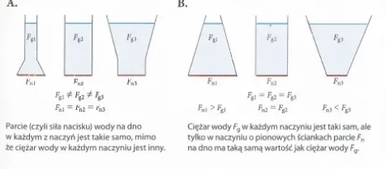
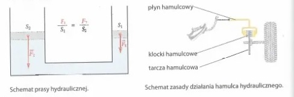
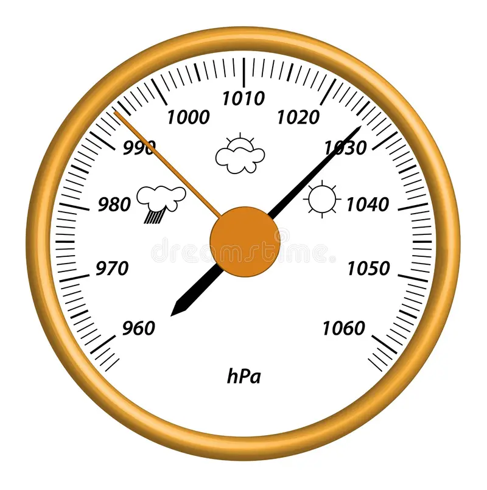

Pełne Wykłady (Słuchaj uważnie)
1. Parcie to SIŁA, Ciśnienie to WYNIK
p = F / S
2. Ciśnienie Hydrostatyczne

p = d · g · h
3. Gazy, Pascal i Barometr


Test Hydrostatyka
Pozostało w kolejce: 9
🎉
Klasówka gotowa!
Wszystkie zagadnienia zostały opanowane.